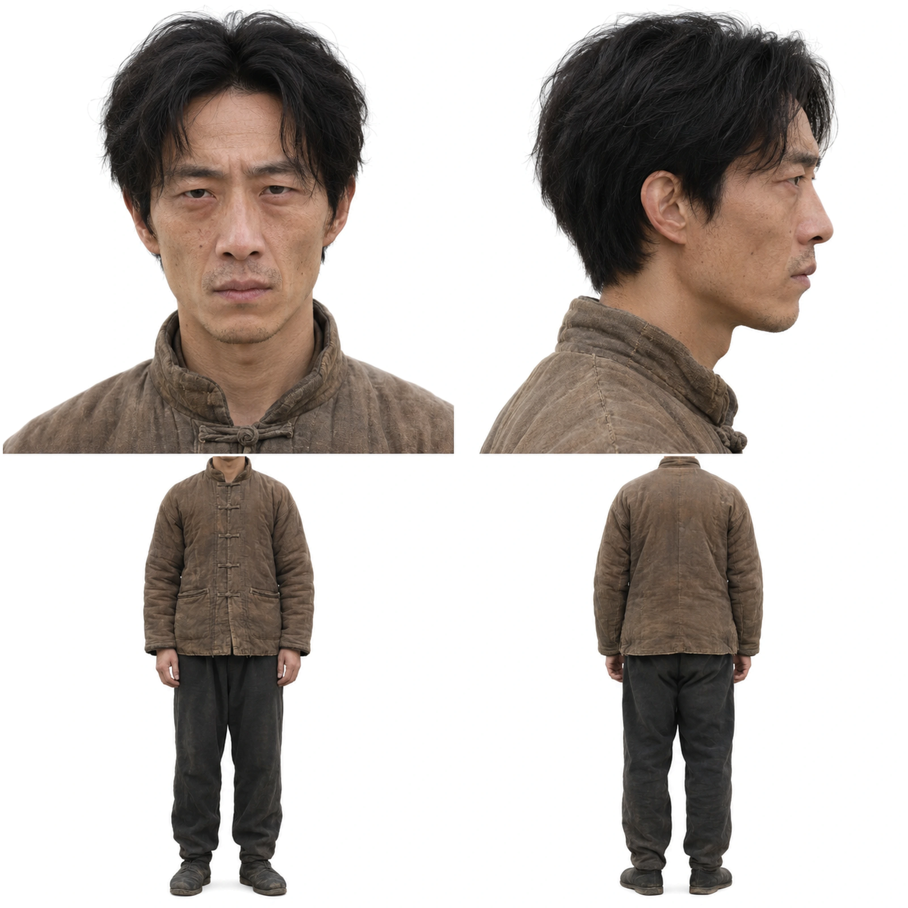
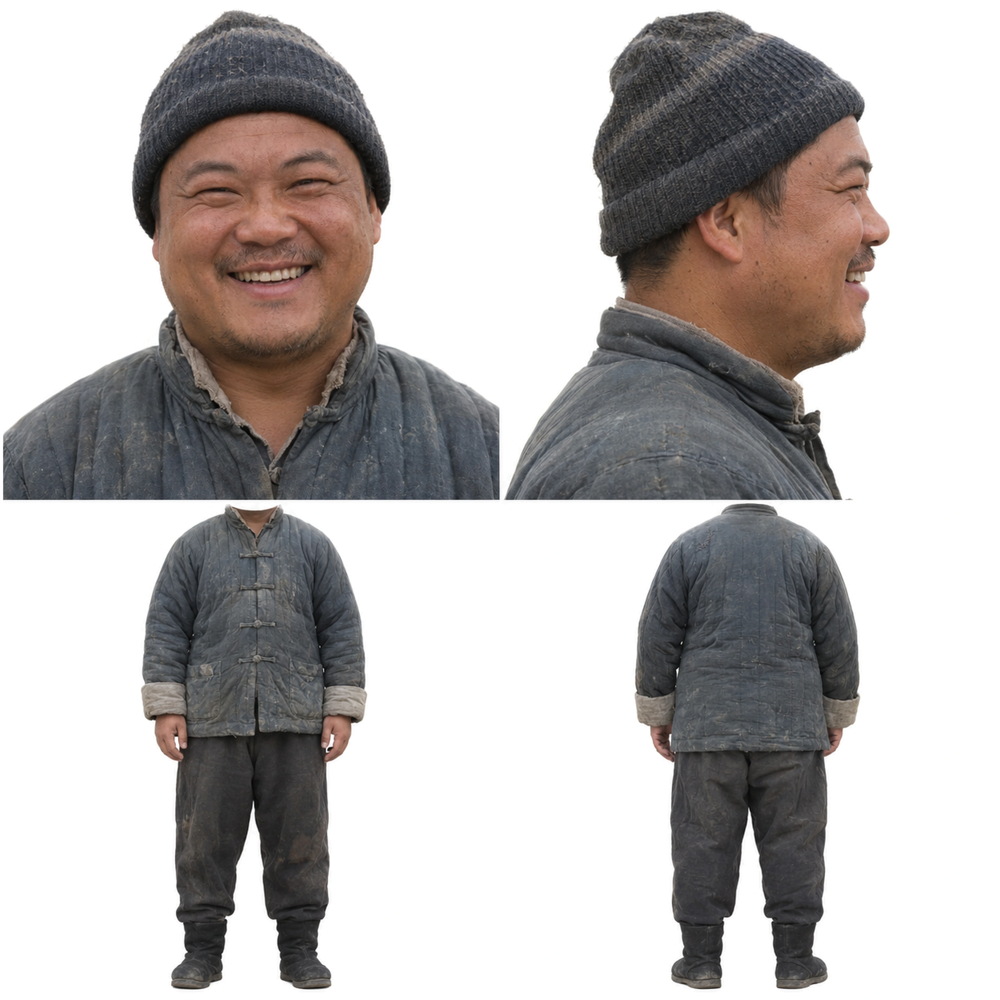
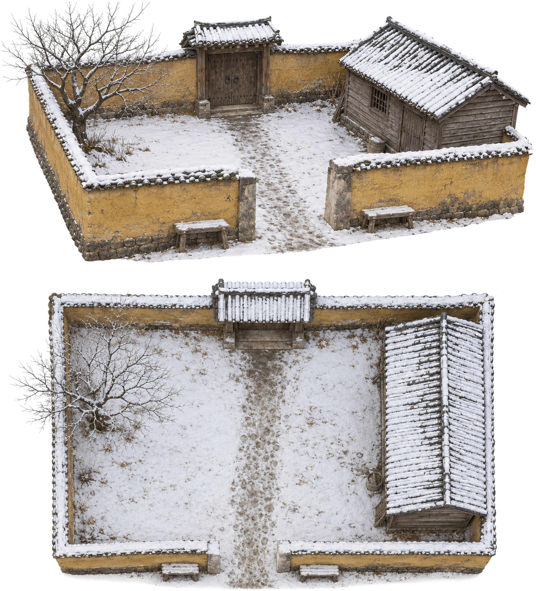
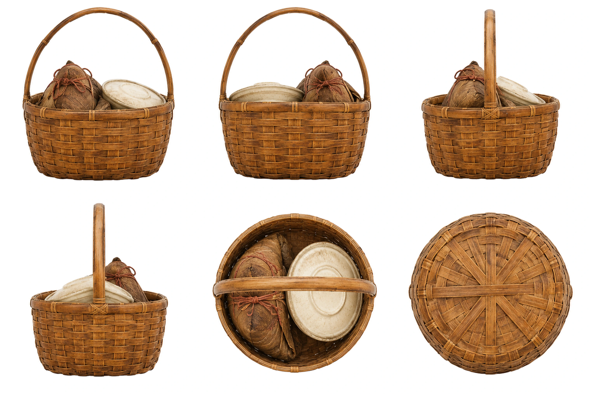
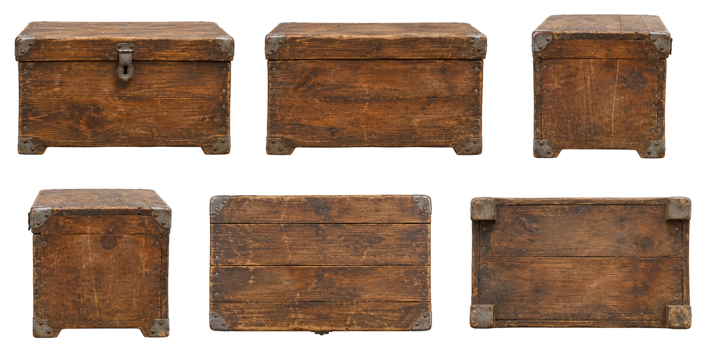
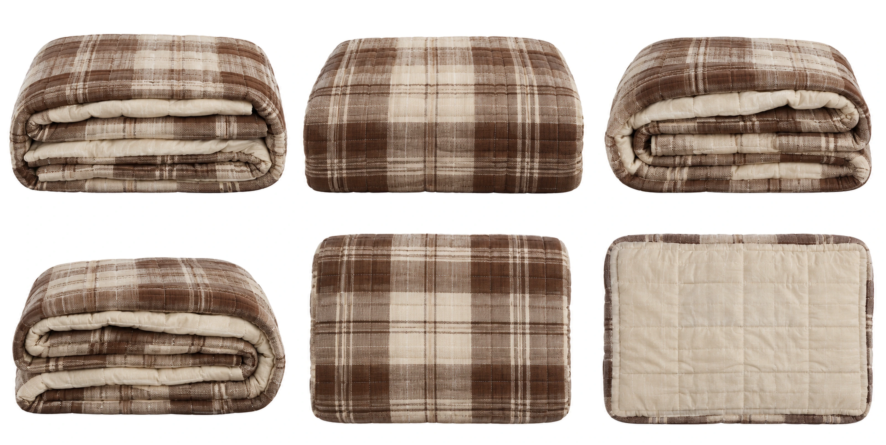

国内短剧
重活野性年代 · 第二集
正在连接在线视频…
视频简介
屋内谈话接续上一集，林姓青年一步步把话讲开，白雅琴在防备和委屈之间起伏。青年离开后，她独自坐在炕边落泪。外院里赖三和二狗闲谈，青年从门口走来，片尾落在一只装着食品的提篮上。
在快手观看原视频 ↗制作资产
角色资产

白雅琴
身份与表演 乡村青年女子，见林姓青年突然清醒，先用玩笑观察他，随后提高警惕。 造型连续性 低束发，绯红挂脖衣裙。坐在窗下的炕沿，棕格或蓝色碎花棉被随段落披在肩背，两件被子按原片拆分为道具。 未完整入镜的身体背面、鞋裤按可见造型补全。

林姓青年
身份与表演 被白雅琴叫作林傻子。醒来后以自己的口吻判断村里的处境，回屋后和白雅琴当面交涉。 造型连续性 偏分短发，旧橄榄盘扣棉衣，胸口和裤腿保留粗针缝补丁。抱臂时身体略倾，受问时收住笑。 未完整入镜的身体背面、鞋裤按可见造型补全。

赖三
雪院中的青年男子，与二狗并坐闲谈。黑色偏中分发，烟棕旧棉袄，深色劳作裤。镜头中先侧靠后转头，用目光引出门洞的人。鞋裤和背面按可见造型补全。

二狗
雪院中的男子，身形壮实，与赖三接话。深灰针织帽、灰蓝棉袄，袖口浅灰，动作有笑着坐起和转头。背面按可见造型补全。
场景资产

白雅琴家
白雅琴家的场景视觉设定，用于空间布局、光影与镜头背景。

白雅琴家雪院
白雅琴家雪院的场景视觉设定，用于空间布局、光影与镜头背景。
道具资产

旧挂历
外观与材质 土墙上的垂页纸挂历。纸边翻起；图中去除文字和印刷人物。 镜头用途 日历插入镜头提示年代，仍挂在白雅琴家的窗旁。 上排前、后、左，下排右、俯、仰。未完整入镜的面采用造型推定。

食物提篮
棕色圆编篮，单拱提梁，内装包好的食品和平放的浅盘。固定内容物摆位，末尾对应雪院静物特写。上排前、后、左，下排右、俯、仰。

炕头小木箱
低矮棕色矩形旧木箱，拼板盖与暗色角件，资产展示为合盖状态。摆在炕头靠墙一侧，保持留守远景中的箱体位置。上排前、后、左，下排右、俯、仰。

棕格棉被
外观与材质 棕、米、灰格纹厚棉被，米白里布。 镜头用途 白雅琴在窗下借被挡风，双手抓住翻边，保持同一格纹朝向。 上排前、后、左，下排右、俯、仰。未完整入镜的面采用造型推定。
剧本与分镜
完整剧本与分镜脚本
国内短剧 · 第二集 原片时长 101.89 秒 故事梗概 屋内谈话接续上一集，林姓青年一步步把话讲开，白雅琴在防备和委屈之间起伏。青年离开后，她独自坐在炕边落泪。外院里赖三和二狗闲谈，青年从门口走来，片尾落在一只装着食品的提篮上。 人物 白雅琴和林姓青年延续上集造型。赖三穿烟棕棉衣，二狗戴深帽、穿灰蓝棉衣，两人在雪院建立新的对话关系。 场景 白雅琴家以炕、窗和门框固定关系镜头。雪院以积雪、土墙和院门交代由室内转向户外。 道具用途 棕格棉被用于白雅琴抓握和擦泪动作；挂历和小木箱保持屋内连续；食物提篮承接结尾静物特写。 剧本与分镜 基于原片抽帧重建，表中对白和音效为复拍制作稿，镜头时长为本稿分配。 | 镜号 | 画面内容 | 镜头视角 | 使用资产 | 动作描述 | 台词/旁白 | 音效 | 单镜头时长 | | 01 | 门口望进炕房，白雅琴和青年一坐一站 | 门框内全景 | 白雅琴、林姓青年、白雅琴家、棕格棉被 | 青年挡住部分窗光，白雅琴从炕边抬眼 | — | 室内底音 | 4.00秒 | | 02 | 青年说话，白雅琴拢紧被子 | 一正一反的近景 | 林姓青年、白雅琴、棕格棉被 | 青年偏头发问，她把被角收紧到身前 | 青年：你先听我说完。 | 布料擦响 | 7.00秒 | | 03 | 青年在挂历前转身 | 侧面中景 | 林姓青年、旧挂历、白雅琴家 | 青年面朝炕边，停一下才接话 | — | 脚步摩擦 | 7.00秒 | | 04 | 她退到墙边，突然反问 | 高位中近景转正面特写 | 白雅琴、林姓青年、棕格棉被 | 她后背靠墙，抱紧被子，仰头看他 | 白雅琴：你这话是什么意思？ | 呼吸、被面轻响 | 11.00秒 | | 05 | 青年俯身讲明来意 | 过肩近景反打 | 林姓青年、白雅琴 | 青年把脸移近她视线，白雅琴急着插话 | 白雅琴：你真要这么做？ | 静下来的人声间隔 | 11.00秒 | | 06 | 青年先笑，随后收起笑意 | 侧前方连续近景 | 林姓青年、白雅琴家 | 他压低声音，讲完后直起身子 | 青年：我把话说清楚，你自己想。 | 衣袖摩擦 | 11.00秒 | | 07 | 青年从炕边退出 | 室内中景接空房远景 | 林姓青年、白雅琴、炕头小木箱、白雅琴家 | 他看一眼白雅琴后离开，镜头留在炕边 | — | 脚步声远去 | 10.00秒 | | 08 | 白雅琴独自落泪 | 远景切面部特写 | 白雅琴、棕格棉被 | 她俯身抱住被子，擦过眼角再抬头 | — | 压低哭声 | 11.00秒 | | 09 | 日光照到积雪外院 | 窗外大全景 | 白雅琴家雪院 | 屋顶积雪和树影交代地点转到外面 | — | 冷风 | 5.00秒 | | 10 | 院中赖三与二狗闲坐 | 两人侧面中景 | 赖三、二狗、白雅琴家雪院、林姓青年 | 两人靠坐说笑，青年出现在门洞 | — | 说笑、踩雪 | 8.00秒 | | 11 | 镜头轮流交代赖三和二狗 | 平视近景组接 | 赖三、二狗 | 赖三转过脸，二狗笑着接话 | 赖三：你瞧门口。 二狗：看见了。 | 短笑 | 9.00秒 | | 12 | 青年停在他们背后 | 前景遮挡的中景 | 林姓青年、二狗、白雅琴家雪院 | 青年走近后侧身停下 | 青年：我来拿点东西。 | 踩雪、衣声 | 4.00秒 | | 13 | 雪地边的提篮 | 静物近景 | 食物提篮、白雅琴家雪院 | 镜头定在篮口的食品和提梁处 | — | 环境底音后切断 | 3.89秒 | 时长合计 101.89 秒